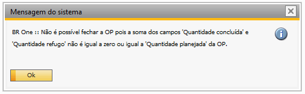

Ordem de produção
No campo tipo, selecione a opção Retrabalho
O Nº do produto da OP. de retrabalho pode ser controlado por Nenhum, Lote ou Série.
{kind=link}
PA administrado por nenhum
{kind=link}
PA administrado por lote
{kind=link}
PA administrado por série
{kind=link}
Na ordem de retrabalho, o campo Depósito será preenchido automaticamente com o depósito definido nas Configurações de produção. Esse campo não poderá ser editado.
{kind=link}
Caso tente adicionar uma ordem de retrabalho sem o devido depósito configurado em configurações de produção, a seguinte será exibida:
{kind=link}
BR One :: Erro ao recuperar o depósito de retrabalho. Retorno: O depósito de retrabalho deve ser definido na tela ‘Configurações de produção’, aba ‘O.P.’.
Ao tentar liberar a Ordem de Produção de retrabalho e a quantidade planejada da OP for maior do que a quantidade disponível em estoque no depósito padrão do item.
{kind=link}
A seguinte mensagem será exibida:
{kind=link}
BR One :: A quantidade planejada deve ser menor ou igual a quantidade em estoque.
Ao inserir uma Ordem de produção (OP) de retrabalho, o roteiro não é carregado e automaticamente as linhas dele também não. Com isso, podemos adicionar uma Ordem de produção (OP) de retrabalho sem linhas.
{kind=link}
Após inserir uma Ordem de Produção (OP) sem um roteiro definido, é possível posteriormente selecionar um roteiro específico para essa OP. No entanto, uma vez que a OP foi atualizada com um roteiro, não será mais possível editar ou remover esse roteiro.
Nas configurações de produção, se a opção Utilizar GGF Arbitrado estiver marcada e o campo Conta GGF arbitrado estiver preenchido, ao tentar adicionar uma Ordem de Produção (OP) de retrabalho que não possui componente, mas inclui uma máquina ou ferramenta, será necessário que o recurso ou o grupo de recurso associado a esta máquina/ferramenta tenha o campo Custo hora preenchido. Caso contrário, uma mensagem de validação será exibida, informando sobre a necessidade de preencher esse campo.
{kind=link}
Caso nas configurações de GGF não estejam marcadas, ao tentar adicionar sem componente, exibirá a seguinte mensagem:
{kind=link}
Caso as configurações de GGF não estejam marcadas e possuir pelo menos um componente no roteiro, a OP de retrabalho é adicionada normalmente.
Caso tente liberar uma OP. de retrabalho sem roteiro, a seguinte mensagem será exibida:
{kind=link}
BR One :: Não é permitido liberar uma OP de retrabalho sem que haja ao menos um documento cadastrado na aba geral.
Na aba Documentos, ao clicar no botão Incluir documento e selecionar “Tipo de documento como Ordem de produção, será aberta uma tela na qual serão listadas as ordens de produção do tipo padrão e retrabalho que podem ser adicionais.
{kind=link}
Para selecionar uma Ordem de Produção (OP) do tipo Retrabalho, é necessário que ela possua uma entrada de PA (Produto Acabado) ou uma reavaliação de estoque. Caso contrário, uma mensagem de erro será exibida:
{kind=link}
BR One :: Não existe entrada de PA nem reavaliação de estoque para a OP de retrabalho vinculada.
Após vincular um documento, é possível liberar a Ordem de Produção (OP) selecionando a opção Liberada no campo Status. Será aberto a tela de pedido de transferência de estoque ou transferência de estoque, conforme opção selecionada em Configurações de produção > aba O.P > Ao liberar OP retrabalho gerar:
Pedido de transferência do estoque
{kind=link}
{kind=link}
Se você escolher a opção Pedido de transferência de estoque, uma tela correspondente será aberta, onde você poderá adicionar o pedido. Após adicionar o pedido, basta clicar em Copiar para e selecionar a opção Transferência do estoque. Em seguida, é importante efetivar a transferência do estoque para que ela seja concluída com sucesso.
Transferência de estoque
{kind=link}
{kind=link}
Ao selecionar a opção Transferência de estoque, uma tela correspondente será aberta, permitindo que você adicione para efetivar a transferência. Se o Produto Acabado (PA) é administrado por lote/série, ao clicar em Adicionar, uma nova tela será exibida para que você possa selecionar o lote/série desejado.
Lote
{kind=link}
Série
{kind=link}
Após selecionar o lote/série, você poderá adicionar e efetivar a transferência de estoque. No caso de PA administrado por nenhum não terá a necessidade de seleção de lote/série, o processo seguirá normalmente, sem essa etapa adicional.
Para itens que não são controlados por lote/série, a tela de Seleção do Número de Lote/Série não será aberta.
Após efetivar a transferência, a Ordem de Produção (OP) terá seu status alterado para Liberado e o número da transferência será exibido no campo do cabeçalho.
{kind=link}
Caso o status da Ordem de produção (OP) de retrabalho seja alterado novamente para Planejada ou tente Cancelar a Ordem de produção (OP), exibirá a seguinte mensagem:
{kind=link}
BR One :: Será cancelada a transferência de estoque gerada no processo de liberação da OP de retrabalho. Continuar?
Ao clicar em Sim a transferência é cancelada, o status voltará para Planejada ou Cancelada.
{kind=link}
{kind=link}
Fechar ordem de produção
Ao fechar a OP de Retrabalho, são realizados diversas validações que garantem a conformidade do processo.
Porém, em casos muito específicos, podem ocorrer erros que impedem o fechamento da mesma, entre eles temos:
A validação abaixo ocorre sempre que soma dos campos Quantidade concluída e Quantidade refugo não é igual a zero ou igual a Quantidade planejada da OP
{kind=link}
BR One :: Não é possível fechar a OP pois a soma dos campos ‘Quantidade concluída’ e ‘Quantidade refugo’ não é igual a zero ou igual a ‘Quantidade planejada’ da OP.
A validação abaixo ocorre sempre que não há quantidade do lote liberado na OP disponível no depósito de retrabalho:
{kind=link}
BR One :: Erro ao efetuar o cancelamento da transferência de estoque. Retorno: Lote xxx quantidade atual de linha 1 no depósito 01-RET inferior à quantidade de documento original. Cancelamento impossível.